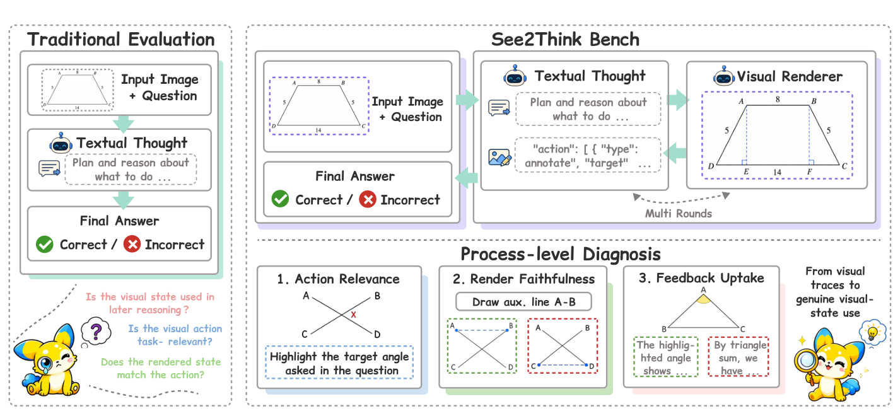
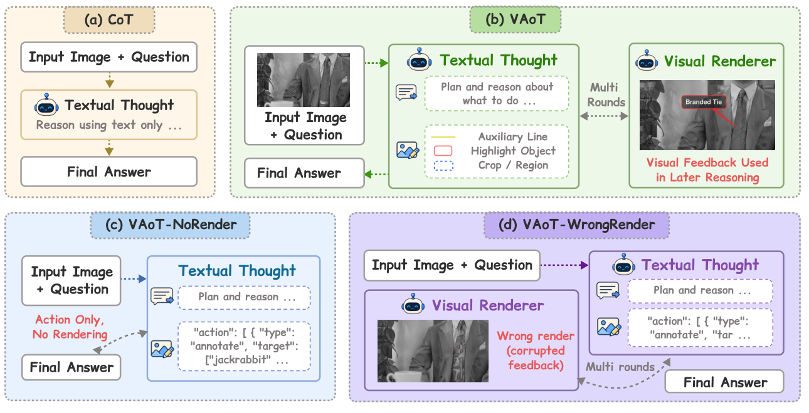
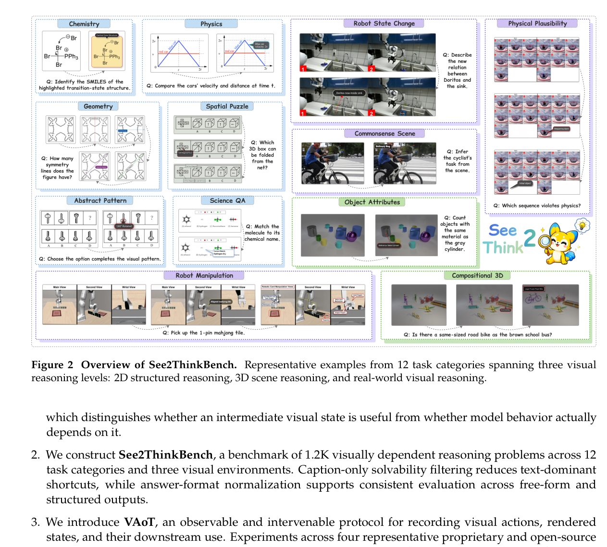
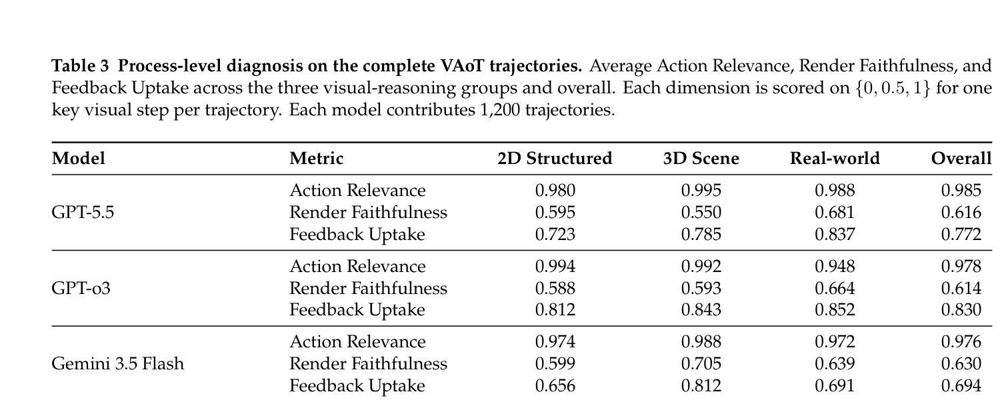
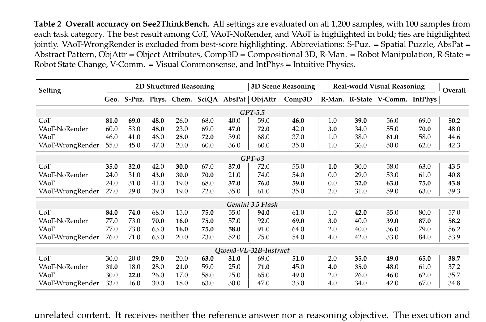

See2Think: Do Multimodal Models Really Use Intermediate Visual States?
4The Hong Kong University of Science and Technology (Guangzhou) 5University of Science and Technology of China 6Fudan University 7Wuhan University
†Equal contribution §Corresponding author

Overview
See2Think evaluates whether multimodal models genuinely use intermediate visual states during reasoning, rather than merely producing visual-looking traces.
See2Think combines See2ThinkBench, a 1,200-sample open-ended benchmark, with Visual Action-of-Thought (VAoT), an inference protocol that records textual thoughts, structured visual actions, rendered visual states, subsequent reasoning, and final answers.
Framework
VAoT interleaves reasoning and visual-state construction. The model first proposes a task-grounded visual action; an external renderer applies the action to the current image; the returned visual state is then available for subsequent reasoning.

| Setting | Description |
|---|---|
CoT | Text-only chain-of-thought baseline. |
VAoT-NoRender | The model proposes visual actions, but no image is rendered back. |
VAoT-Full | The model receives rendered visual states after visual actions. |
VAoT-WrongRender | The model receives task-relevant corrupted visual feedback for diagnostic intervention. |
See2ThinkBench
See2ThinkBench contains 1,200 open-ended, visually dependent problems across 12 task categories and three broad reasoning groups: 2D structured reasoning, 3D scene reasoning, and real-world visual reasoning.

Process-level Diagnosis
Action Relevance
Whether the selected visual operation targets task-relevant evidence.
Render Faithfulness
Whether the renderer faithfully executes the requested visual action.
Feedback Uptake
Whether the model uses the rendered visual state in later reasoning.
WrongRender
Whether corrupted but plausible feedback changes downstream behavior.

Results
See2Think reports final-answer accuracy together with process-level measures. The main paper evaluates GPT-5.5, GPT-o3, Gemini 3.5 Flash, and Qwen3-VL-32B-Instruct across all four inference settings.

Getting Started
1. Clone the repository
git clone https://github.com/CSU-JPG/See2Think.git
cd See2Think2. Install dependencies
python -m venv .venv
source .venv/bin/activate
pip install -r requirements.txt3. Configure endpoints
cp config.qwen.example.sh config.sh
source config.sh4. Run one setting
python -u solve/run_tasks.py \
--tasks /path/to/tasks.json \
--mode banana \
--model gpt-5.5 \
--setting vaot_full \
--workers 4 \
--prompt_dir prompt
The public code release does not include the paper's full task manifests,
benchmark images, generated trajectories, or private API credentials.
Use examples/tasks.example.json as the manifest format reference.
Citation
@article{yan2026see2think,
title = {See2Think: Do Multimodal Models Really Use Intermediate Visual States?},
author = {Yan, Siyu and Yan, Zhuoran and Xu, Haiying and Zhou, Panhao and Chen, Jingyu and Ji, Chenhao and Cao, Shuo and Zhang, Yongheng and Liu, Haoze and Zhang, Siyu and Gu, Xiwen and Liu, Yihao and Wang, Alex Jinpeng},
journal = {arXiv preprint},
year = {2026}
}